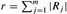

|
|
< Day Day Up > |
|
The push-relabel method allows us to apply the basic operations in any order at all. By choosing the order carefully and managing the network data structure efficiently, however, we can solve the maximum-flow problem faster than the O(V2E) bound given by Corollary 26.26. We shall now examine the relabel-to-front algorithm, a push-relabel algorithm whose running time is O(V3), which is asymptotically at least as good as O(V2E), and better for dense networks.
The relabel-to-front algorithm maintains a list of the vertices in the network. Beginning at the front, the algorithm scans the list, repeatedly selecting an over-flowing vertex u and then "discharging" it, that is, performing push and relabel operations until u no longer has a positive excess. Whenever a vertex is relabeled, it is moved to the front of the list (hence the name "relabel-to-front") and the algorithm begins its scan anew.
The correctness and analysis of the relabel-to-front algorithm depend on the notion of "admissible" edges: those edges in the residual network through which flow can be pushed. After proving some properties about the network of admissible edges, we shall investigate the discharge operation and then present and analyze the relabel-to-front algorithm itself.
If G = (V, E) is a flow network with source s and sink t, f is a preflow in G, and h is a height function, then we say that (u, v) is an admissible edge if cf(u, v) > 0 and h(u) = h(v) + 1. Otherwise, (u, v) is inadmissible. The admissible network is Gf,h = (V, Ef,h), where Ef,h is the set of admissible edges.
The admissible network consists of those edges through which flow can be pushed. The following lemma shows that this network is a directed acyclic graph (dag).
If G = (V, E) is a flow network, f is a preflow in G, and h is a height function on G, then the admissible network Gf,h = (V, Ef,h) is acyclic.
Proof The proof is by contradiction. Suppose that Gf,h contains a cycle p = 〈v0, v1 , . . . ,vk〉, where v0 = vk and k > 0. Since each edge in p is admissible, we have h(vi-1) = h(vi) + 1 for i = 1, 2, . . . ,k. Summing around the cycle gives
Because each vertex in cycle p appears once in each of the summations, we derive the contradiction that 0 = k.
The next two lemmas show how push and relabel operations change the admissible network.
Let G = (V, E) be a flow network, let f be a preflow in G, and suppose that the attribute h is a height function. If a vertex u is overflowing and (u, v) is an admissible edge, then PUSH(u, v) applies. The operation does not create any new admissible edges, but it may cause (u, v) to become inadmissible.
Proof By the definition of an admissible edge, flow can be pushed from u to v. Since u is overflowing, the operation PUSH(u, v) applies. The only new residual edge that can be created by pushing flow from u to v is the edge (v, u). Since h[v] = h[u] - 1, edge (v, u) cannot become admissible. If the operation is asaturating push, then cf(u, v) = 0 afterward and (u, v) becomes inadmissible.
Let G = (V, E) be a flow network, let f be a preflow in G, and suppose that the attribute h is a height function. If a vertex u is overflowing and there are no admissible edges leaving u, then RELABEL(u) applies. After the relabel operation, there is at least one admissible edge leaving u, but there are no admissible edges entering u.
Proof If u is overflowing, then by Lemma 26.15, either a push or a relabel operation applies to it. If there are no admissible edges leaving u, then no flow can be pushed from u and so RELABEL(u) applies. After the relabel operation, h[u] = 1 + min {h[v] : (u, v) ∈ Ef}. Thus, if v is a vertex that realizes the minimum in this set, the edge (u, v) becomes admissible. Hence, after the relabel, there is at least one admissible edge leaving u.
To show that no admissible edges enter u after a relabel operation, suppose that there is a vertex v such that (v, u) is admissible. Then, h[v] = h[u] + 1 after the relabel, and so h[v] > h[u] + 1 just before the relabel. But by Lemma 26.13, no residual edges exist between vertices whose heights differ by more than 1. Moreover, relabeling a vertex does not change the residual network. Thus, (v, u) is not in the residual network, and hence it cannot be in the admissible network.
Edges in the relabel-to-front algorithm are organized into "neighbor lists." Given a flow network G = (V, E), the neighbor list N[u] for a vertex u ∈ V is a singly linked list of the neighbors of u in G. Thus, vertex v appears in the list N[u] if (u, v) ∈ E or (v, u) ∈ E. The neighbor list N[u] contains exactly those vertices v for which there may be a residual edge (u, v). The first vertex in N[u] is pointed to by head[N[u]]. The vertex following v in a neighbor list is pointed to by next-neighbor[v]; this pointer is NIL if v is the last vertex in the neighbor list.
The relabel-to-front algorithm cycles through each neighbor list in an arbitrary order that is fixed throughout the execution of the algorithm. For each vertex u, the field current[u] points to the vertex currently under consideration in N[u]. Initially, current[u] is set to head[N[u]].
An overflowing vertex u is discharged by pushing all of its excess flow through admissible edges to neighboring vertices, relabeling u as necessary to cause edges leaving u to become admissible. The pseudocode goes as follows.
DISCHARGE(u) 1 while e[u] > 0 2 do v ← current[u] 3 if v = NIL 4 then RELABEL(u) 5 current[u] ← head[N[u]] 6 elseif cf(u, v) > 0 and h[u] = h[v] + 1 7 then PUSH(u, v) 8 else current[u] ← next-neighbor[v]
Figure 26.9 steps through several iterations of the while loop of lines 1-8, which executes as long as vertex u has positive excess. Each iteration performs exactly one of three actions, depending on the current vertex v in the neighbor list N[u].
If v is NIL, then we have run off the end of N[u]. Line 4 relabels vertex u, and then line 5 resets the current neighbor of u to be the first one in N[u]. (Lemma 26.30 below states that the relabel operation applies in this situation.)
If v is non-NIL and (u, v) is an admissible edge (determined by the test in line 6), then line 7 pushes some (or possibly all) of u's excess to vertex v.
If v is non-NIL but (u, v) is inadmissible, then line 8 advances current[u] one position further in the neighbor list N[u].
Observe that if DISCHARGE is called on an overflowing vertex u, then the last action performed by DISCHARGE must be a push from u. Why? The procedure terminates only when e[u] becomes zero, and neither the relabel operation nor the advancing of the pointer current[u] affects the value of e[u].
We must be sure that when PUSH or RELABEL is called by DISCHARGE, the operation applies. The next lemma proves this fact.
If DISCHARGE calls PUSH(u, v) in line 7, then a push operation applies to (u, v). If DISCHARGE calls RELABEL(u) in line 4, then a relabel operation applies to u.
Proof The tests in lines 1 and 6 ensure that a push operation occurs only if the operation applies, which proves the first statement in the lemma.
To prove the second statement, according to the test in line 1 and Lemma 26.29, we need only show that all edges leaving u are inadmissible. Observe that as DISCHARGE(u) is repeatedly called, the pointer current[u] moves down the list N[u]. Each "pass" begins at the head of N[u] and finishes with current[u] = NIL, at which point u is relabeled and a new pass begins. For the current[u] pointer to advance past a vertex v ∈ N[u] during a pass, the edge (u, v) must be deemed inadmissible by the test in line 6. Thus, by the time the pass completes, every edge leaving u has been determined to be inadmissible at some time during the pass. The key observation is that at the end of the pass, every edge leaving u is still inadmissible. Why? By Lemma 26.28, pushes cannot create any admissible edges, let alone one leaving u. Thus, any admissible edge must be created by a relabel operation. But the vertex u is not relabeled during the pass, and by Lemma 26.29, any other vertex v that is relabeled during the pass has no entering admissible edges after relabeling. Thus, at the end of the pass, all edges leaving u remain inadmissible, and the lemma is proved.
In the relabel-to-front algorithm, we maintain a linked list L consisting of all vertices in V - {s, t}. A key property is that the vertices in L are topologically sorted according to the admissible network, as we shall see in the loop invariant below. (Recall from Lemma 26.27 that the admissible network is a dag.)
The pseudocode for the relabel-to-front algorithm assumes that the neighbor lists N[u] have already been created for each vertex u. It also assumes that next[u] points to the vertex that follows u in list L and that, as usual, next[u] = NIL if u is the last vertex in the list.
RELABEL-TO-FRONT(G, s, t) 1 INITIALIZE-PREFLOW(G, s) 2 L ← V[G] - {s, t}, in any order 3 for each vertex u ∈ V[G] - {s, t} 4 do current[u] ← head[N[u]] 5 u ← head[L] 6 while u ≠ NIL 7 do old-height ← h[u] 8 DISCHARGE(u) 9 if h[u] > old-height 10 then move u to the front of list L 11 u ← next[u]
The relabel-to-front algorithm works as follows. Line 1 initializes the preflow and heights to the same values as in the generic push-relabel algorithm. Line 2 initializes the list L to contain all potentially overflowing vertices, in any order. Lines 3-4 initialize the current pointer of each vertex u to the first vertex in u's neighbor list.
As shown in Figure 26.10, the while loop of lines 6-11 runs through the list L, discharging vertices. Line 5 makes it start with the first vertex in the list. Each time through the loop, a vertex u is discharged in line 8. If u was relabeled by the DISCHARGE procedure, line 10 moves it to the front of list L. This determination is made by saving u's height in the variable old-height before the discharge operation (line 7) and comparing this saved height to u's height afterward (line 9). Line 11 makes the next iteration of the while loop use the vertex following u in list L. If u was moved to the front of the list, the vertex used in the next iteration is the one following u in its new position in the list.
To show that RELABEL-TO-FRONT computes a maximum flow, we shall show that it is an implementation of the generic push-relabel algorithm. First, observe that it performs push and relabel operation only when they apply, since Lemma 26.30 guarantees that DISCHARGE only performs them when they apply. It remains to show that when RELABEL-TO-FRONT terminates, no basic operations apply. The remainder of the correctness argument relies on the following loop invariant:
At each test in line 6 of RELABEL-TO-FRONT, list L is a topological sort of the vertices in the admissible network Gf,h = (V, Ef,h), and no vertex before u in the list has excess flow.
Initialization: Immediately after INITIALIZE-PREFLOW has been run, h[s] = |V| and h[v] = 0 for all v ∈ V - {s}. Since |V | = 2 (because V contains at least s and t), no edge can be admissible. Thus, Ef,h = ø, and any ordering of V - {s, t} is a topological sort of Gf,h.
Since u is initially the head of the list L, there are no vertices before it and so there are none before it with excess flow.
Maintenance: To see that the topological sort is maintained by each iteration of the while loop, we start by observing that the admissible network is changed only by push and relabel operations. By Lemma 26.28, push operations do not cause edges to become admissible. Thus, admissible edges can be created only by relabel operations. After a vertex u is relabeled, however, Lemma 26.29 states that there are no admissible edges entering u but there may be admissible edges leaving u. Thus, by moving u to the front of L, the algorithm ensures that any admissible edges leaving u satisfy the topological sort ordering.
To see that no vertex preceding u in L has excess flow, we denote the vertex that will be u in the next iteration by u'. The vertices that will precede u' in the next iteration include the current u (due to line 11) and either no other vertices (if u is relabeled) or the same vertices as before (if u is not relabeled). Since u is discharged, it has no excess flow afterward. Thus, if u is relabeled during the discharge, no vertices preceding u' have excess flow. If u is not relabeled during the discharge, no vertices before it on the list acquired excess flow during this discharge, because L remained topologically sorted at all times during the discharge (as pointed out just above, admissible edges are created only by relabeling, not pushing), and so each push operation causes excess flow to move only to vertices further down the list (or to s or t). Again, no vertices preceding u' have excess flow.
Termination: When the loop terminates, u is just past the end of L, and so the loop invariant ensures that the excess of every vertex is 0. Thus, no basic operations apply.
We shall now show that RELABEL-TO-FRONT runs in O(V3) time on any flow network G = (V, E). Since the algorithm is an implementation of the generic push-relabel algorithm, we shall take advantage of Corollary 26.22, which provides an O(V) bound on the number of relabel operations executed per vertex and an O(V2) bound on the total number of relabel operations overall. In addition, Exercise 26.4-2 provides an O(VE) bound on the total time spent performing relabel operations, and Lemma 26.23 provides an O(VE) bound on the total number of saturating push operations.
The running time of RELABEL-TO-FRONT on any flow network G = (V, E) is O(V3).
Proof Let us consider a "phase" of the relabel-to-front algorithm to be the time between two consecutive relabel operations. There are O(V2) phases, since there are O(V2) relabel operations. Each phase consists of at most |V| calls to DISCHARGE, which can be seen as follows. If DISCHARGE does not perform a re-label operation, then the next call to DISCHARGE is further down the list L, and the length of L is less than |V|. If DISCHARGE does perform a relabel, the next call to DISCHARGE belongs to a different phase. Since each phase contains at most |V| calls to DISCHARGE and there are O(V2) phases, the number of times DISCHARGE is called in line 8 of RELABEL-TO-FRONT is O(V3). Thus, the total work performed by the while loop in RELABEL-TO-FRONT, excluding the work performed within DISCHARGE, is at most O(V3).
We must now bound the work performed within DISCHARGE during the execution of the algorithm. Each iteration of the while loop within DISCHARGE performs one of three actions. We shall analyze the total amount of work involved in performing each of these actions.
We start with relabel operations (lines 4-5). Exercise 26.4-2 provides an O(VE) time bound on all the O(V2) relabels that are performed.
Now, suppose that the action updates the current[u] pointer in line 8. This action occurs O(degree(u) times each time a vertex u is relabeled, and O(V · degree(u)) times overall for the vertex. For all vertices, therefore, the total amount of work done in advancing pointers in neighbor lists is O(VE) by the handshaking lemma (Exercise B.4-1).
The third type of action performed by DISCHARGE is a push operation (line 7). We already know that the total number of saturating push operations is O(VE). Observe that if a nonsaturating push is executed, DISCHARGE immediately returns, since the push reduces the excess to 0. Thus, there can be at most one nonsaturating push per call to DISCHARGE. As we have observed, DISCHARGE is called O(V3) times, and thus the total time spent performing nonsaturating pushes is O(V3).
The running time of RELABEL-TO-FRONT is therefore O(V3 + VE), which is O(V3).
Illustrate the execution of RELABEL-TO-FRONT in the manner of Figure 26.10 for the flow network in Figure 26.1(a). Assume that the initial ordering of vertices in L is 〉v1, v2, v3, v4〉 and that the neighbor lists are
|
N[v1] |
= |
〈s, v2, v3〉 , |
|
N[v2] |
= |
〈s, v1, v3, v4〉 , |
|
N[v3] |
= |
〈v1, v2, v4 t〉 , |
|
N[v4] |
= |
〈v2, v3, t〉 . |
We would like to implement a push-relabel algorithm in which we maintain a first-in, first-out queue of overflowing vertices. The algorithm repeatedly discharges the vertex at the head of the queue, and any vertices that were not overflowing before the discharge but are overflowing afterward are placed at the end of the queue. After the vertex at the head of the queue is discharged, it is removed. When the queue is empty, the algorithm terminates. Show that this algorithm can be implemented to compute a maximum flow in O(V3) time.
Show that the generic algorithm still works if RELABEL updates h[u] by simply computing h[u] ← h[u] + 1. How would this change affect the analysis of RELABEL-TO-FRONT?
Show that if we always discharge a highest overflowing vertex, the push-relabel method can be made to run in O(V3) time.
Suppose that at some point in the execution of a push-relabel algorithm, there exists an integer 0 < k ≤ |V| - 1 for which no vertex has h[v] = k. Show that all vertices with h[v] > k are on the source side of a minimum cut. If such a k exists, the gap heuristic updates every vertex v ∈ V - s for which h[v] > k to set h[v] ← max(h[v], |V|+1). Show that the resulting attribute h is a height function.(The gap heuristic is crucial in making implementations of the push-relabel method perform well in practice.)
An n × n grid is an undirected graph consisting of n rows and n columns of vertices, as shown in Figure 26.11. We denote the vertex in the ith row and the jth column by (i, j). All vertices in a grid have exactly four neighbors, except for the boundary vertices, which are the points (i, j) for which i = 1, i = n, j = 1, or j = n.
Given m ≤ n2 starting points (x1, y1), (x2, y2), . . . ,(xm, ym) in the grid, the escape problem is to determine whether or not there are m vertex-disjoint paths from the starting points to any m different points on the boundary. For example, the grid in Figure 26.11(a) has an escape, but the grid in Figure 26.11(b) does not.
Consider a flow network in which vertices, as well as edges, have capacities. That is, the total positive flow entering any given vertex is subject to a capacity constraint. Show that determining the maximum flow in a network with edge and vertex capacities can be reduced to an ordinary maximum-flow problem on a flow network of comparable size.
Describe an efficient algorithm to solve the escape problem, and analyze its running time.
A path cover of a directed graph G = (V, E) is a set P of vertex-disjoint paths such that every vertex in V is included in exactly one path in P. Paths may start and end anywhere, and they may be of any length, including 0. A minimum path cover of G is a path cover containing the fewest possible paths.
Give an efficient algorithm to find a minimum path cover of a directed acyclic graph G = (V, E). (Hint: Assuming that V = {1, 2, . . . ,n}, construct the graph G' = (V', E'), where
|
V |
= |
{x0, x1, . . . ,xn} ∪ {y0, y1, . . . ,yn} , |
|
E' |
= |
{(x0, xi) : i ∈ V} ∪ {(yi, y0) : i ∈ V} ∪ {(xi, yj) : (i, j) ∈ E} , |
Does your algorithm work for directed graphs that contain cycles? Explain.
Professor Spock is consulting for NASA, which is planning a series of space shuttle flights and must decide which commercial experiments to perform and which instruments to have on board each flight. For each flight, NASA considers a set E = {E1, E2, . . . ,Em} of experiments, and the commercial sponsor of experiment Ej has agreed to pay NASA pj dollars for the results of the experiment. The experiments use a set I = {I1, I2, . . . ,In} of instruments; each experiment Ej requires all the instruments in a subset Rj ⊆ I. The cost of carrying instrument Ik is ck dollars. The professor's job is to find an efficient algorithm to determine which experiments to perform and which instruments to carry for a given flight in order to maximize the net revenue, which is the total income from experiments performed minus the total cost of all instruments carried.
Consider the following network G. The network contains a source vertex s, vertices I1, I2, . . . ,In, vertices E1, E2, . . . ,Em, and a sink vertex t. For k = 1, 2. . . ,n, there is an edge (s, Ik) of capacity ck, and for j = 1, 2,. . . ,m, there is an edge (Ej, t) of capacity pj. For k = 1, 2, . . . ,n and j = 1, 2, . . . ,m, if Ik ∈ Rj , then there is an edge (Ik, Ej) of infinite capacity.
Show that if Ej ∈ T for a finite-capacity cut (S, T) of G, then Ik ∈ T for each Ik ∈ Rj.
Show how to determine the maximum net revenue from the capacity of the minimum cut of G and the given pj values.
Give an efficient algorithm to determine which experiments to perform and which instruments to carry. Analyze the running time of your algorithm in terms of m, n, and .
Let G = (V,E) be a flow network with source s, sink t, and integer capacities. Suppose that we are given a maximum flow in G.
Suppose that the capacity of a single edge (u, v) ∈ E is increased by 1. Give an O(V + E)-time algorithm to update the maximum flow.
Suppose that the capacity of a single edge (u, v) ∈ E is decreased by 1. Give an O(V + E)-time algorithm to update the maximum flow.
Let G = (V, E) be a flow network with source s, sink t, and an integer capacity c(u, v) on each edge (u, v) ∈ E. Let C = max(u, v)∈Ec(u, v).
Argue that a minimum cut of G has capacity at most C |E|.
For a given number K, show that an augmenting path of capacity at least K can be found in O(E) time, if such a path exists.
The following modification of FORD-FULKERSON-METHOD can be used to compute a maximum flow in G.
MAX-FLOW-BY-SCALING (G, s, t) 1 C ← max(u.v)∈Ec(u, v) 2 initialize flow f to 0 3 K ← 2⌊lgC⌋ 4 while K ≥ 1 5 do while there exists an augmenting path p of capacity at least K 6 do augment flow f along p 7 K ← K/2 8 return f
Argue that MAX-FLOW-BY-SCALING returns a maximum flow.
Show that the capacity of a minimum cut of the residual graph Gf is at most 2K |E| each time line 4 is executed.
Argue that the inner while loop of lines 5-6 is executed O(E) times for each value of K.
Conclude that MAX-FLOW-BY-SCALING can be implemented so that it runs in O(E2 lg C) time.
Suppose that we allow a flow network to have negative (as well as positive) edge capacities. In such a network, a feasible flow need not exist.
Consider an edge (u, v) in a flow network G = (V, E) with c(u, v) < 0. Briefly explain what such a negative capacity means in terms of the flow between u and v.
Let G = (V, E) be a flow network with negative edge capacities, and let s and t be the source and sink of G. Construct the ordinary flow network G' = (V', E') with capacity function c', source s', and sink t', where
V' = V ∪ {s', t'}
and
|
E' |
= |
E ∪ {(u, v) : (v, u) ∈ E} |
|
∪ {(s', v) : v ∈ V} |
||
|
∪ {(u, t') : u ∈ V} |
||
|
∪ {(s, t), (t, s)} |
We assign capacities to edges as follows. For each edge (u, v) ∈ E, we set
c'(u, v) = c'(v, u) = (c(u, v) + c(v, u))/2 .
For each vertex u ∈ V, we set
c' (s', u) = max(0, (c(V, u) - c(u, V))/2)
and
c'(u, t') = max(0, (c(u, V) - c(V, u))/2) .
We also set c'(s, t) = c'(t, s) = ∞.
Prove that if a feasible flow exists in G, then all capacities in G' are nonnegative and a maximum flow exists in G' such that all edges into the sink t' are saturated.
Prove the converse of part (b). Your proof should be constructive, that is, given a flow in G' that saturates all the edges into t', your proof should show how to obtain a feasible flow in G.
Describe an algorithm that finds a maximum feasible flow in G. Denote by MF(|V|, |E|) the worst-case running time of an ordinary maximum flow algorithm on a graph with |V| vertices and |E| edges. Analyze your algorithm for computing the maximum flow of a flow network with negative capacities in terms of MF.
In this problem, we describe a faster algorithm, due to Hopcroft and Karp, for finding a maximum matching in a bipartite graph. The algorithm runs in time. Given an undirected, bipartite graph G = (V, E), where V = L ∪ R and all edges have exactly one endpoint in L, let M be a matching in G. We say that a simple path P in G is an augmenting path with respect to M if it starts at an unmatched vertex in L, ends at an unmatched vertex in R, and its edges belong alternately to M and E - M. (This definition of an augmenting path is related to, but different from, an augmenting path in a flow network.) In this problem, we treat a path as a sequence of edges, rather than as a sequence of vertices. A shortest augmenting path with respect to a matching M is an augmenting path with a minimum number of edges.
Given two sets A and B, the symmetric difference A ⊕ B is defined as (A-B) ∪ (B - A), that is, the elements that are in exactly one of the two sets.
Show that if M is a matching and P is an augmenting path with respect to M, then the symmetric difference M ⊕ P is a matching and |M ⊕ P| = |M| + 1. Show that if P1, P2, . . . ,Pk are vertex-disjoint augmenting paths with respect to M, then the symmetric difference M ⊕ (P1 ∪ P2 ∪···∪ Pk) is a matching with cardinality |M| + k.
The general structure of our algorithm is the following:
HOPCROFT-KARP (G) 1 M ← ø 2 repeat 3 let be a maximum set of vertex-disjoint shortest augmenting paths with respect to M 4 M ← M ⊕ (P1 ∪ P2 ∪···∪ Pk) 5 until 6 return M
The remainder of this problem asks you to analyze the number of iterations in the algorithm (that is, the number of iterations in the repeat loop) and to describe an implementation of line 3.
Given two matchings M and M* in G, show that every vertex in the graph G' = (V, M ⊕ M*) has degree at most 2. Conclude that G' is a disjoint union of simple paths or cycles. Argue that edges in each such simple path or cycle belong alternately to M or M*. Prove that if |M| ≤ |M*|, then M ⊕ M* contains at least |M*| - |M| vertex-disjoint augmenting paths with respect to M.
Let l be the length of a shortest augmenting path with respect to a matching M, and let P1, P2, . . . ,Pk be a maximum set of vertex-disjoint augmenting paths of length l with respect to M. Let M' = M ⊕ (P1 ∪···∪ Pk), and suppose that P is a shortest augmenting path with respect to M'.
Show that if P is vertex-disjoint from P1, P2, . . . ,Pk, then P has more than l edges.
Now suppose that P is not vertex-disjoint from P1, P2, . . . ,Pk. Let A be the set of edges (M ⊕ M') ⊕ P. Show that A = (P1 ∪ P2 ∪···∪ Pk) ⊕ P and that |A| ≥ (k + 1)l. Conclude that P has more than l edges.
Prove that if a shortest augmenting path for M has length l, the size of the maximum matching is at most |M| + |V| /l.
Show that the number of repeat loop iterations in the algorithm is at most . (Hint: By how much can M grow after iteration number ?)
Give an algorithm that runs in O(E) time to find a maximum set of vertex-disjoint shortest augmenting paths P1, P2, . . . ,Pk for a given matching M. Conclude that the total running time of HOPCROFT-KARP is .
|
|
< Day Day Up > |
|